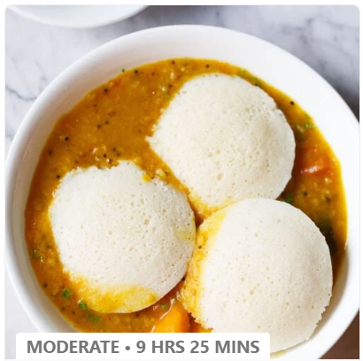
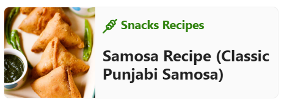
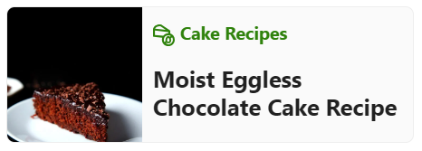
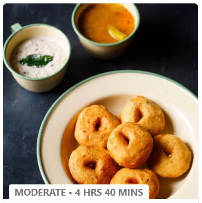
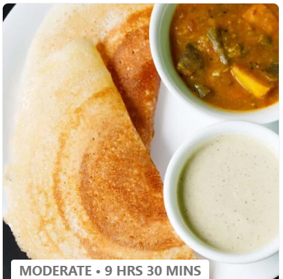
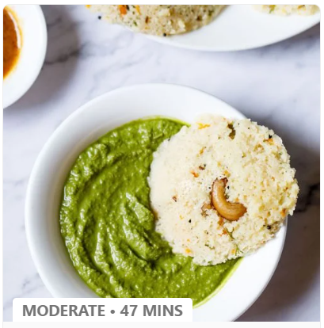
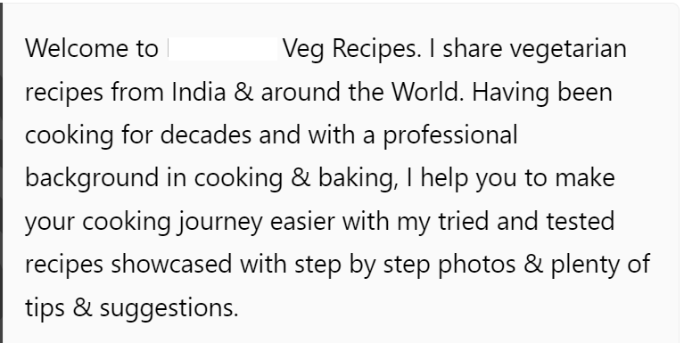

Idli Recipe (With Homemade Idli Batter)
| Idli is one of the most healthiest and popular South Indian breakfast dish. These are soft, light, fluffy steamed round cakes made with a ground, fermented rice and lentil batter. Here I share my foolproof recipe with video and step-by-step photos that will help you in making the best idli. This Idli recipe is one of the earliest recipe from the blog which has been tried and tested with great results by many of our readers. | Hi, I am devarsh. Running the kitchen for decades, I share tried and tested Vegetarian recipes on my food blog since 2009, with a step-by-step photo guide & plenty of tips so that your cooking journey is easier. I also have a professional background in cooking & baking. |
|  | Popular Recipes   |
Serve the steamed idlis with hot sambar and enjoy your delicious Idli Sambar!Popular Breakfast Recipes  View Best Recipes With UsConnect With UsYou can share your experience related to a recipe or give your suggestions or feedback. We reply to most of the comments or queries we get on the blog. Comments are moderated by us every day. So it does take some hours or a day before you see the reply to your comment. If you have tried a recipe, you can even rate or review it. Spammy, rude or offensive comments are automatically deleted as we have enabled the comment system that way. Event links and promotional links will also not be approved. |
1. Ingredients for Idli:
2. Instructions for Idli Batter:
3. Instructions for Idli:
4. Ingredients for Sambar:
5. Instructions for Sambar:
|